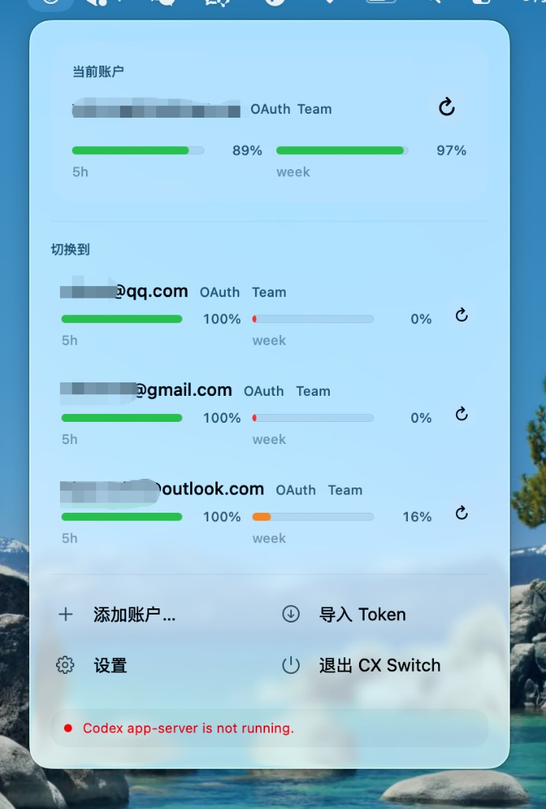
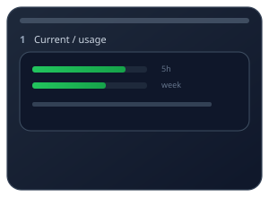
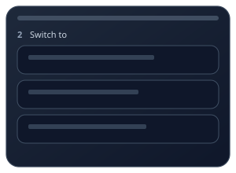
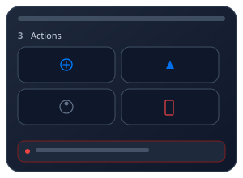

Instant Switch 极速切换
Account switching completes in under 50ms. 账户切换在 50 毫秒内完成。
Menu bar utility 菜单栏工具
CX Switch lives in your menu bar: instant switching for ChatGPT / Codex, live usage bars, and per-account credentials in a local SQLite store. CX Switch 常驻菜单栏：为 ChatGPT / Codex 提供极速切换、实时用量条，以及按账户保存的本地 SQLite 凭证。
Requires macOS 14 or later. 需要 macOS 14 或更新版本。

Features 功能亮点
Everything runs locally on your Mac — no web dashboard, no extra accounts. 所有逻辑都在你的 Mac 本地运行——无需网页控制台，也无需额外账号。
Account switching completes in under 50ms. 账户切换在 50 毫秒内完成。
Each account’s auth is stored separately in local SQLite. 每个账户的鉴权信息单独保存在本地 SQLite 中。
Real-time usage bars for 5-hour and weekly windows. 5 小时与周窗口的实时用量条。
Usage refreshes automatically when cooldowns expire. 冷却结束后自动刷新用量数据。
Encrypted local database — nothing leaves your machine. 本地加密数据库——数据不离开你的设备。
Native SwiftUI UI aligned with macOS Tahoe Liquid Glass. 原生 SwiftUI，适配 macOS Tahoe Liquid Glass 设计语言。
How it works 工作流程
1
Sign in to each ChatGPT account with the built-in auth flow. 通过内置登录流程，逐个添加 ChatGPT 账户。
2
Pick an account from the menu bar — switching is instant. 在菜单栏选择目标账户——切换几乎是瞬时的。
3
Active credentials are written to ~/.codex/auth.json
so Codex picks them up automatically.
当前凭证会写入 ~/.codex/auth.json，Codex 会自动读取。
Product diagram 产品示意图
Three diagrams for one popover: usage (1), account list (2), shortcuts and status (3). Not pixel-perfect screenshots. 同一菜单栏浮层拆成三张示意图（非截图）：① 用量 ② 切换 ③ 快捷与状态。



Install 安装
brew install --cask cx-switchGrab the latest release from GitHub — signed & notarized builds are published there. 从 GitHub Releases 获取最新构建（签名与公证由发布流程提供）。
Open latest release 打开最新发布Requirements: macOS 14 (Sonoma) or later. 系统要求：macOS 14（Sonoma）或更新版本。
FAQ 常见问题
Yes. CX Switch is open source under Apache-2.0 and has no in-app purchases.
是的。CX Switch 在 Apache-2.0 下开源，没有应用内购买。
Locally in an encrypted SQLite database under Application Support:
~/Library/Application Support/com.novainfra.cx-switch/cx-switch.db.
凭证加密保存在本机 Application Support 下的 SQLite：
~/Library/Application Support/com.novainfra.cx-switch/cx-switch.db。
The app targets standard ChatGPT accounts. Team / Enterprise compatibility depends on your org’s auth setup — try it and file an issue if something breaks.
应用面向常规 ChatGPT 账户。Team / Enterprise 取决于组织的鉴权配置——如遇问题欢迎提 issue。
CX Switch does not ship your credentials to a third-party analytics service. Tokens are exchanged directly with OpenAI’s auth endpoints when you sign in.
CX Switch 不会把凭证发送到第三方统计服务。登录时 token 直接与 OpenAI 鉴权端点交换。
When you switch accounts, CX Switch writes the active credentials to
~/.codex/auth.json so the Codex CLI uses the new session.
切换账户后，CX Switch 会把当前凭证写入
~/.codex/auth.json，Codex CLI 将使用新的会话。
Yes — the repository is public on GitHub so you can audit behavior and build from source.
是的——仓库在 GitHub 公开，你可以审计行为或自行编译。
macOS 14 (Sonoma) or later. Apple Silicon and Intel are supported.
macOS 14（Sonoma）或更新；支持 Apple Silicon 与 Intel。